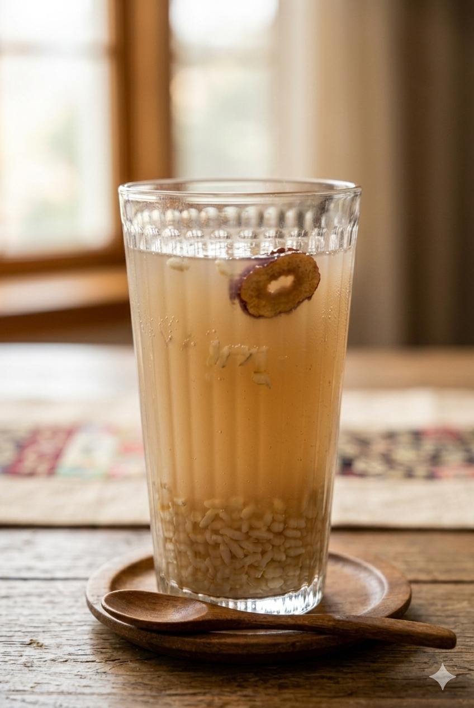

Sikhye adalah minuman tradisional Korea yang telah diwariskan secara turun-temurun dan masih populer hingga saat ini. Minuman ini dikenal dengan rasa manis alaminya, tampilan khas berupa butiran nasi yang mengapung, serta sensasi menyegarkan ketika disajikan dingin. Di Korea, sikhye sering dihidangkan sebagai penutup makan atau sajian wajib dalam perayaan besar seperti Tahun Baru Imlek Korea dan Chuseok. Meski kerap disebut dengan istilah gamju yang berarti “minuman beralkohol ringan”, sikhye sama sekali tidak memabukkan. Kandungan fermentasinya sangat rendah dan aman dikonsumsi oleh semua kalangan, mulai dari anak-anak hingga orang dewasa.
Learn MoreSikhye adalah minuman tradisional Korea yang dibuat dari nasi yang difermentasi bersama air malt barley (gandum malt). Proses fermentasi ini menghasilkan rasa manis alami tanpa tambahan gula berlebihan. Minuman ini biasanya disajikan dingin dengan butiran nasi yang mengapung di dalamnya, memberikan sensasi unik saat diminum. Sikhye sering disajikan di berbagai acara khusus seperti perayaan tahun baru Korea (Seollal) atau festival musim gugur (Chuseok). Selain itu, minuman ini juga mudah ditemukan di restoran-restoran Korea atau dalam bentuk kemasan kaleng di supermarket.
Ekstraksi: Rendam tepung malt dalam air, ambil bagian beningnya saja. Fermentasi: Campur air malt dan nasi di rice cooker (mode Warm) selama 5 jam. Perebusan: Rebus cairan bersama gula selama 5 menit untuk mengunci rasa. Pendinginan: Sajikan dingin agar lebih segar.
